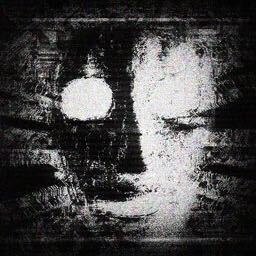

 查看我的 Github
查看我的 Github
關於我
我在聽 (由 Apple Music 提供播放器)
技術庫
C++
HTML5
Java
JavaScript
Python
我的專案
個人網站
個人網站
透過 HTML5、CSS3 與 JavaScript 展示我的技能與專案經驗，動態效果豐富。
我的 Blog
我的 Blog
分享技術心得與開發經驗，內容豐富且持續更新中。
Windows APP
Windows APP
專案正處於概念驗證階段，未來將持續加入更多功能。
我的產品
Harrison 的大語言模型 API 接入服務
我們提供一站式 API 接入解決方案，助您快速整合主要語言模型。服務內容包括：
- 高效能、低延遲的接入體驗
- 安全、穩定且易於擴展的架構設計
- 支援多款主流語言模型產品
ChatGPT-4o
ChatGPT-4o-mini
ChatGPT-o1
ChatGPT-o3-mini
ChatGPT-o3-mini-high
DallE
Claude 3.5 sonnet
Claude 3.5 haiku
Claude 3.0 opus
Sora